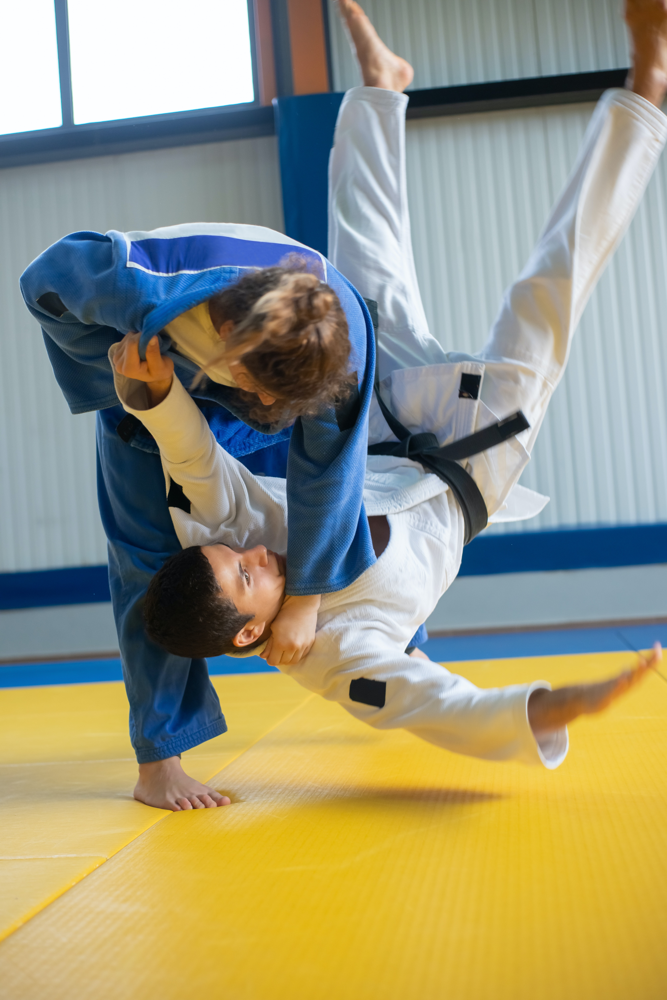
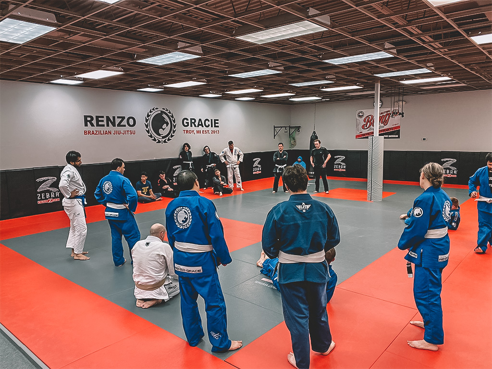
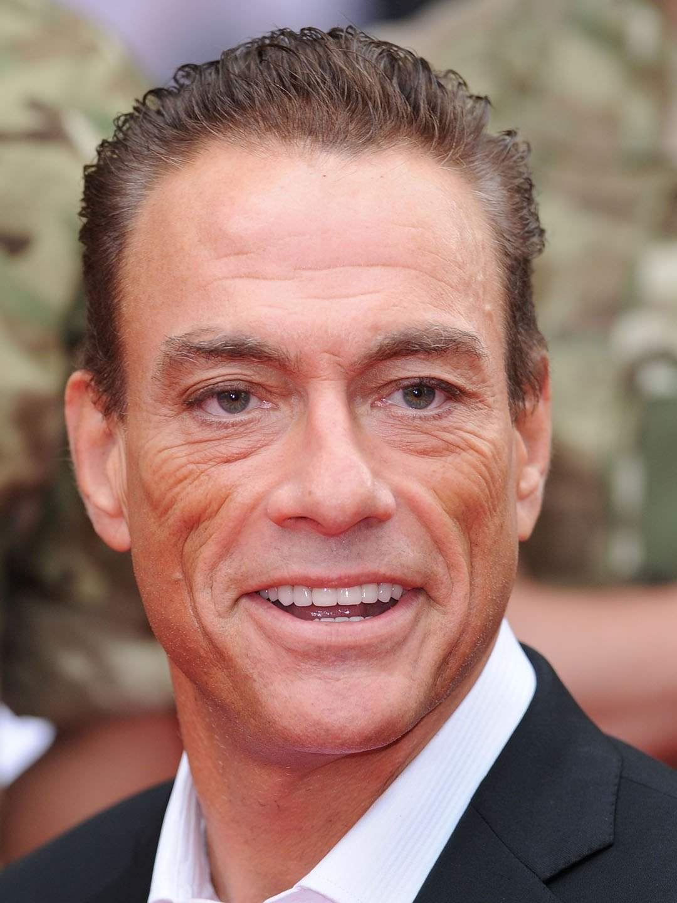
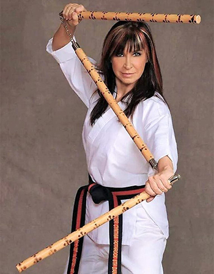
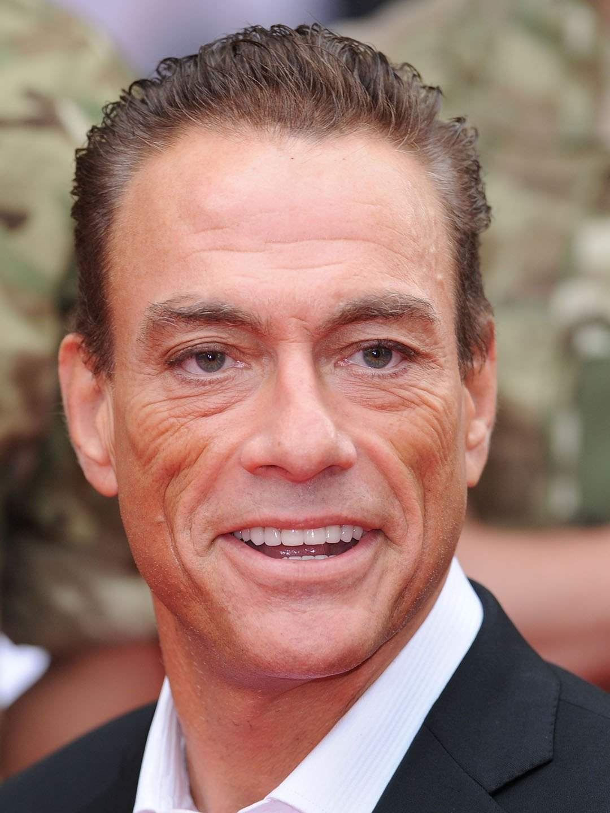
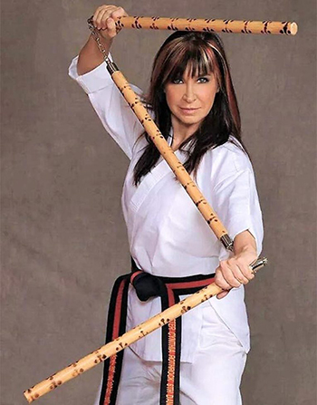

Background to Martial Arts
Rookie Road (2023a) defines Martial arts as different combat styles used for self-defence. In 1500 BC, archaeological and historical indicate that martial art started as long as humans existed because people throughout history wanted to participate in fighting for protection. According to NY Martial Arts Academy, Asia is considered as the birthplace for martial arts; infact, in china martial arts were used for hunting and protection from attackers(Achenhuang, 2018). Hashashin (2015) explains that martial arts are linked to religious and spiritual beliefs; indeed, Ancient India's martial arts is related to spiritual beliefs; for example, the martial art Kalaripayattu which focuses on flexibility and agility(Great Britain Top Team, 2021). Britannia clarifies that martial arts is divided into two categories armed and unarmed; for example, swordsmanship is armed while hand to hand combat is unarmed.
Ethics of Martial Arts
First, you must salute your instructor and parents; second, you must not use martial arts for bullying or injure someone unless it is for self-defence; third, you must be polite to other martial arts practitioners (Stanley, 2021).
Rules of Martial Arts
Mixed martial arts have the following rules:
- The matches are made of 3 rounds and each match lasts five minutes.
- Fighters of the same weight class fight to ensure fairness.
- Fighters must use legitimate throwing or grabbing moves to beat the challenger.
- Eye gouging.
- Biting.
- Hair pulling.
- Groin attack.
- Harming the opponent in break or an opponent under the protection of the referee.
Types of Martial Arts
According to One Championship (2019), there are types of martial arts such as
- Karate: is a martial art that involves fighting without using weapons (Puncher Staff, 2018).
- Kung fu: is a martial art that involves kicks and punches for self-defence (Rookie Road, 2023b).
- taekwondo: is a martial art that focuses on physical combat skills and discipline (Felton, 2022).
- Judo: is a derivative of Jujutsu that trains someone's body and mind by gaining an advantage over the opponent (Martucci, 2022).
- Kickboxing: is a sport that integrates punches and kicks (Yokkao, 2023)
- Kendo: is a japanese fencing style which uses bamboo swords for offence and protective gear for defence.(lascano, 2023).
- Mixed Martial Arts: are a style that combine combat moves from wrestling, karate, and jujitsu (Britannica, 2023).
- Aikido: is a martial art that integrates Japanese weapon such as a sword or staff with striking and pinning techniques (Tacoma Aikikai, 2023).
Locations to Play Martial Arts
Martial arts such as karate and Kungfu can be played in New York under the World Open Martial Arts Championship organised by the World Fighting Martial Arts Federation. According to Peacock (2022), martial arts can be held in gyms, community centers and colleges, and sport clubs; for instance, the best martial arts academies are Renzo Gracie, American Top Team, Kodokan Judo Institute, and Songshan Shaolin Traditional Wushu. Some possible destinations to play martial arts are China, Netherlands, Brazil, and South Korea (White, 2023); furthermore, locations such as China, Japan, and Thailand are great places to learn martial arts (Kelly, 2021). Finally, best places to practice martial arts are the gym and park (Garcia, 2021b).
Prominent Martial Artists
According to Javatpoint(2021), the following are some of the best martial artists:
- Bruce Lee: a chinese martial artist and an actor who is known for creating the Jeet Kun Doe; moreover, he was integral to the development of mixed martial arts.
- Jackie Chan: is a skilled martial artist who excelled at acrobatics and kung fu; in fact, his fighting skills ushered him to a future in the acting industry (Raymond, 2022).
- Wesley Snipes: Since the age of 12 snipes was practicing martial arts; additionally, he earned two black belts where one is in karate and the other is hapkido (Empire, 2023).
- Jean Claude Van Damme: Naidoo (2023) states that Damme started practicing shotokan karate and kickboxing at a young age; as a result, he won the European Karate Championship.
- Chuck Norris: He learned martial arts while he was part of the US Air Force in Korea in 1950s; next, in 1960, he managed to open around 30 karate studios where taught celebrities like Priscilla Presley and Steve McQueen; next, he earned the title: World Middle Weight Karate Championship five times; finally, by 1974, he retired (Biography, 2021).
- Tony Jaa: studied in a temple martial arts then went to physical eduction college to learn other styles of martial arts such as wushu and judo (IMDB, 2023).
- Cynthia Rothrock: is known as the first woman in the film industry as a real martial artist. Cynthia is a talented at sport and expert at using weapons and martial arts such as Taekwondo and karate (Lobban, 2021).
 


